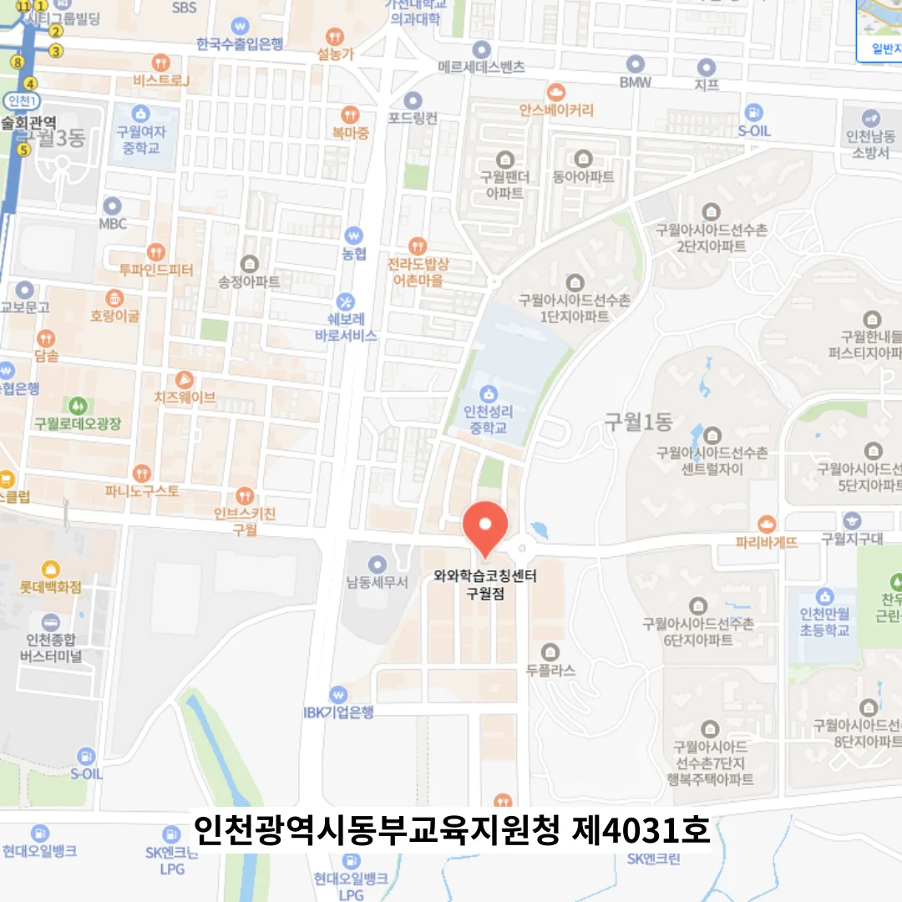

구월 고3 영어학원
구월 고3 영어학원
예를 들어, 생물의 물질대사를 ‘입력 → 반응 → 출력’ 구조로 정리하면 내용이 훨씬 선명하게 보입니다. 실제로 문제를 풀어가는 과정을 소리내어 설명하면서 ‘여기서 왜 이 선택지를 골랐는가’ ‘이 계산이 왜 필요한가’를 스스로 질문하면 사고의 흐름을 명확히 점검할 수 있습니다. 이는 단순한 진도 관리 이상의 의미를 가지며, 성취의 감각을 실시간으로 인지하게 함으로써 좌절하기 쉬운 과정 속에서도 지속적인 동기를 부여한다. 문제의 선택지 유형별 분석 시에는 단서형 문제는 근거 중심으로, 함정형 문제는 주의집중 중심으로 접근하는 방식을 구분하여 읽는 훈련을 한다. 수현이는 A6 크기의 작은 노트를 하나 장만해 매일 발생한 실수를 기록했고, 단순한 오답 뿐 아니라 ‘왜 틀렸는가’의 이유도 함께 남겼다. 각 교실에는 학생들의 수업 태도와 몰입도를 모니터링할 수 있는 수업 모니터가 설치되어 있어, 강사가 실시간으로 학습자의 주의 분산 여부를 확인하고 적절한 개입을 할 수 있도록 돕는다. 학부모가 함께 살펴보는 시간을 가지면 아이는 자신의 진전을 언어로 풀어내며 성장에 대한 자각을 하게 되고 이는 중단 없이 학습을 이어가는 원동력이 됩니다.